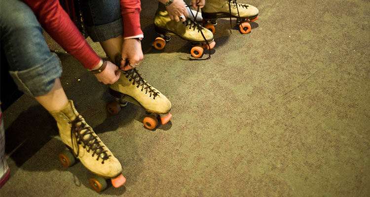
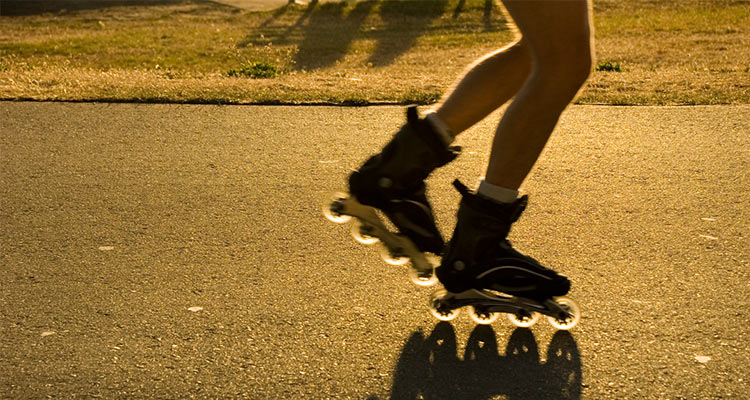
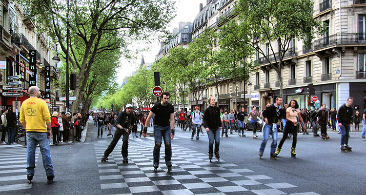

近些年有关于怀旧的青春电影一定会有这样的桥段：男孩带着心爱的女孩去旱冰场去滑旱冰，然后在滑旱冰的完成一次完美的邂逅。确实，带着姑娘溜冰或者滑旱冰，一方面展示自己过人的技术和英姿，一方面还能教心爱的人滑旱冰，两全其美，何乐而不为？
Roller skating，曾经有很多汉化版本——旱冰、溜冰、滑冰、滚轴溜冰……但是今天，我们统一叫轮滑，但并不否定之前的叫法，因为这些都是正确的。
轮滑鞋分为双排轮滑和单排轮滑，两种类型的轮滑鞋又有着各自的项目，由于文革等原因，国内轮滑领域发展较晚，没有经过系统发展的后果导致了项目不完善，以至于国内玩家偏向于直排轮滑，认识不完整导致认为双排轮滑的落伍，而国内有不少说法是有双排基础想练单排，或双排转单排之类的都是片面的，非常外行的说法，双排轮滑和单排轮滑作为运动器材都有着很高的国际地位，因为这是两种不同的运动器材。
我国的轮滑运动从1982年开始起步，发展至今已经成为推动全民健身的一个普及性体育项目。中国轮滑协会秘书长黄强说，“中国轮滑日”主要是取“六六”的谐音“溜溜”。
而轮滑是很棒的代步工具，如果选对了类型，无论是双排轮滑和单排轮滑都是可以刷街的。一般情况下，在平整的路面上，轮滑都可以代步成为交通工具。当然抓地性会因路况的不同而有所不同，但基本上是没有问题的。在交通越来越拥挤的今天，轮滑已经为一种流行和时髦的交通工具。所以轮滑鞋代步，尤其是速滑鞋的刷街性能最为实用。
1、当然，还是要提醒大家，滑着轮滑穿梭于车来人往的大街上时，一定要注意交通安全；
2、轮滑的场地要求也很低，找到一块平整的路面就可以享受轮滑带给你的乐趣了，所以快去享受快乐吧！